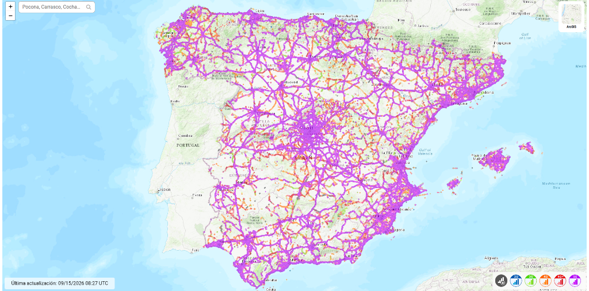
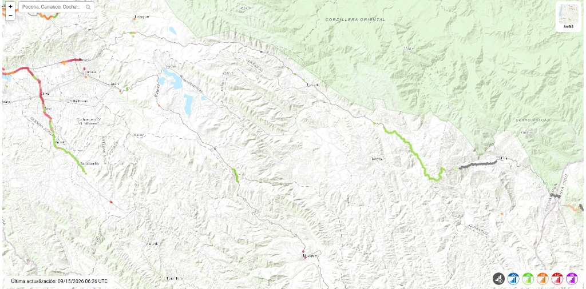

Bretxa Digital
Què és exactament la bretxa digital i per què no és només un problema tècnic, sinó una greu font de desigualtat social, educativa i econòmica al món?
1. Què és la Bretxa Digital?
La bretxa digital (o escletxa digital) és la distància o desigualtat socioeconòmica que separa aquelles persones, comunitats o territoris que disposen d'un accés regular, ràpid i assequible a les Tecnologies de la Informació i la Comunicació (TIC) i a Internet, d'aquelles que en queden completament excloses o tenen una connexió extremadament precària.
Al món contemporani, estar incomunicat no significa simplement «no poder jugar o mirar xarxes socials». Significa no poder alertar un metge o ambulància d'urgència, no poder consultar continguts educatius a l'escola, no conèixer els preus de mercat per vendre les collites de la terra i quedar condemnat a l'aïllament social. Per aquest motiu, l'any 2011 l'ONU va declarar l'accés a les telecomunicacions com un Dret Humà fonamental.
Les 3 Dimensions de la Bretxa Digital
L'escletxa digital no és un concepte simple de «tenir o no tenir mòbil», sinó que es manifesta en tres nivells estructurals:
És la barrera material: hi ha xarxa física disponible? A les grans ciutats hi arriba la fibra òptica i antenes 4G/5G cada pocs carrers; a les zones rurals muntanyoses com Pocona, el relleu bloqueja el senyal i cap operador comercial hi inverteix perquè no li és rendible econòmicament.
Fins i tot quan hi ha una antena a prop, tenir cobertura no serveix de res si les famílies no poden pagar el cost del telèfon intel·ligent, l'ordinador o les tarifes mensuals de dades. A Bolívia, un gigabyte de dades pot representar un esforç econòmic familiar deu vegades més alt que a Europa.
Disposar d'un dispositiu no garanteix el progrés sense competències digitals crítiques: saber distingir notícies falses, realitzar tràmits administratius, formar-se acadèmicament o millorar la productivitat laboral, en lloc de quedar atrapats en un ús passiu.
A Bolívia conviuen dues realitats oposades: d'una banda, l'eix urbà de les grans capitals (La Paz, Cochabamba i Santa Cruz), on més del 75% de la població es connecta amb 4G i fibra; de l'altra, les valls rurals andines com Pocona, on l'accés a les llars cau per sota del 2%. A continuació presentem les dades empíriques comparatives que demostren aquesta esquerda.
2. Dades Comparatives: Espanya vs Bolívia (Urbà) vs Pocona (Rural)
Compara de manera interactiva i directa les dades reals d'accés a les telecomunicacions entre 🇪🇸 Espanya / Cat., 🇧🇴 Bolívia (Urbà) i 🏔️ Pocona (Rural). Descobreix com l'orografia andina i el model de negoci de les grans operadores deixen la comunitat rural en una situació d'aïllament extrem.
Mapes Reals de Cobertura Mòbil: Espanya vs Pocona (Font: nPerf)
Mesuraments oficials en temps real captats per milions de dispositius mòbils a través de la plataforma global nPerf.com. Fes clic sobre qualsevol mapa per ampliar-lo i analitzar els detalls territorials.
🇪🇸 Espanya i Catalunya: Cobertura Universal
📶 Cobertura 4G/5G > 99%
🔍 Clica per ampliarRadiografia del mapa: Una teranyina hiperdensa de color lila (5G) i taronja/vermell (4G i 4G+) connecta sense interrupció totes les ciutats, municipis rurals, autopistes i xarxes secundàries de transport.
🏔️ Pocona (Bolívia): Zona d'Ombra Andina
⚠️ Cobertura Rural < 2%
🔍 Clica per ampliarRadiografia del mapa: La pràctica totalitat del municipi de Pocona i la Província de Carrasco apareix en blanc absolut (silenci digital). Només un feble traç verd (3G residual) recorre l'antiga carretera de muntanya; les comunitats habitades i els cantons no reben cap senyal.
Com ha evolucionat la Bretxa Digital? Bolívia Urbà vs Pocona Rural
Explora les dades oficials de l'última dècada (Font: ATT Bolívia, ITU i Xarxa Telesalud). Comprova com, mentre les ciutats experimentaven un creixement exponencial en connectivitat i telemedicina, l'alta muntanya andina de Pocona quedava pràcticament estancada.